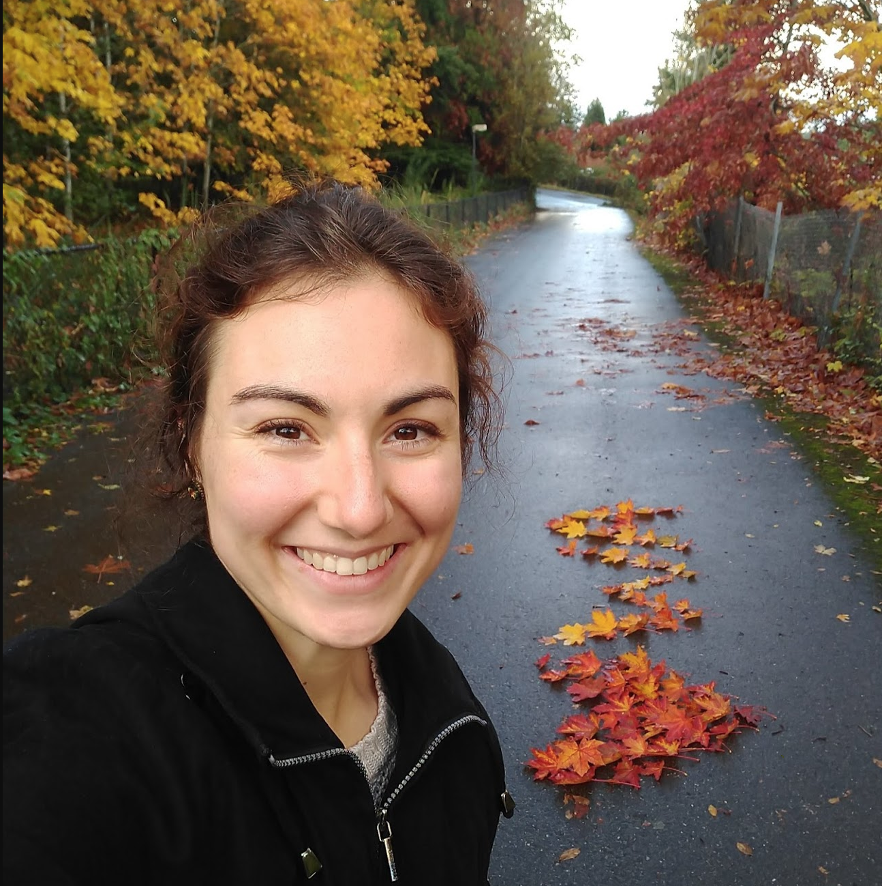

Hi, I'm Becca!
To coffee is great. To ice cream is divine.
If there's something else I know to be true, it's that connection is everything. With my background in the humanities, arts, and entrepreneurship, I'm skilled at finding the why and what. Now, building things with code gives me the how for tackling important, challenging problems. With technology's limitless options, I'm focused on asking critical questions and creating connection that is meaningful, accessible, and sustainable.